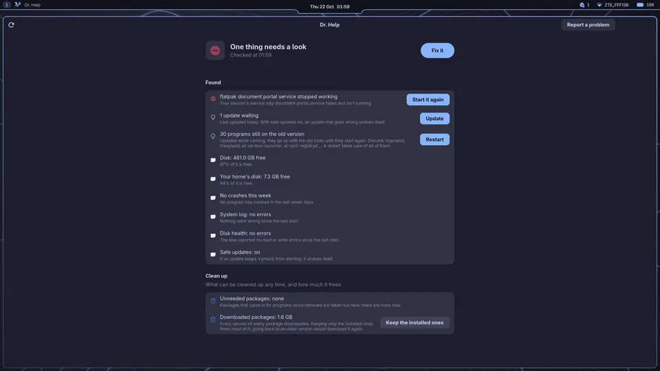

Dr. Help
A check-up, in plain words
Dr. Help looks the system over the way the Arch Wiki's System maintenance asks: failed services, errors in the log, Arch's news, leftover packages, mirrors, firmware, disk health, the package cache, SSD trimming, Btrfs scrubs. What it can fix has a button; all of them at once is one password. Its Report files a problem on GitHub with personal details taken out.
